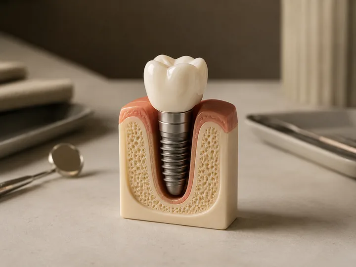
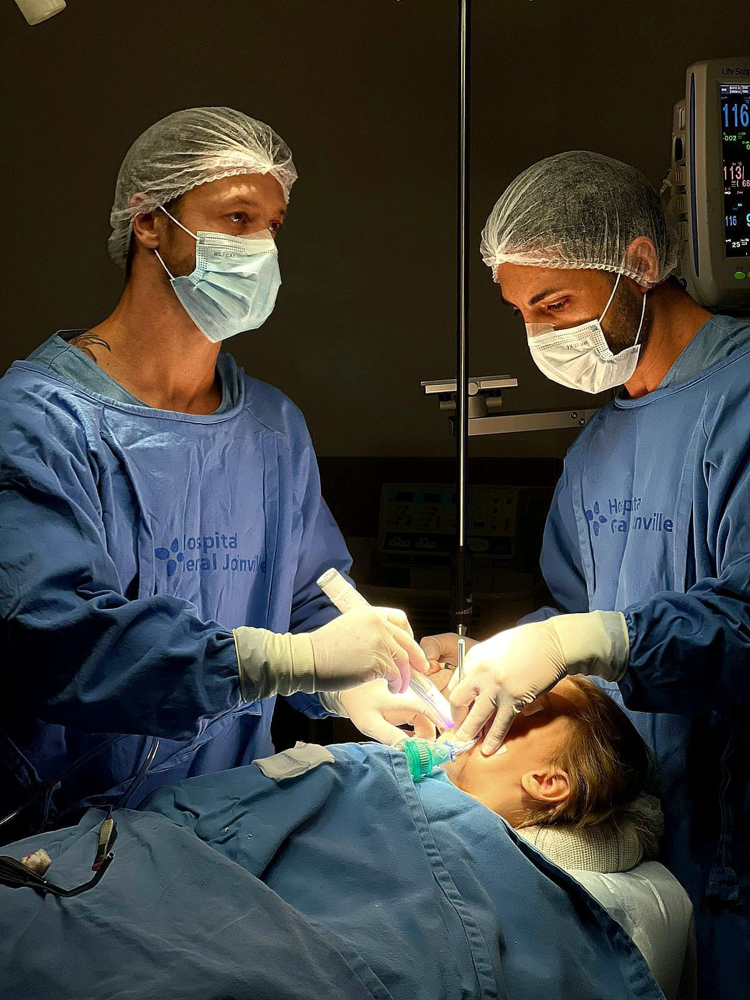
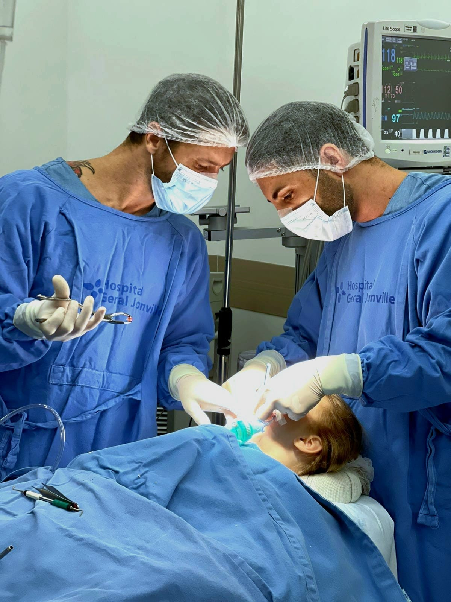

Tratamentos
Cuidados para diferentes necessidades.
Conheça as áreas apresentadas pela Clínica Renova Odontologia. Para orientação sobre seu caso, entre em contato.

Prótese dentária

Estética dental

Clareamento dental

Ortodontia

Odontopediatria
Entre em contato para receber informações sobre atendimento.
Agende sua avaliaçãoTecnologias para o seu cuidado
Mais conforto em cada atendimento.

Óxido nitroso (sedação consciente na odontologia)
O óxido nitroso, popularmente conhecido como “gás do riso”, é um método moderno e seguro de sedação consciente utilizado na odontologia para proporcionar mais conforto, tranquilidade e bem-estar durante os atendimentos.
A técnica consiste na administração de uma mistura controlada de óxido nitroso e oxigênio por meio de uma máscara nasal. O paciente permanece acordado, consciente e colaborativo durante todo o procedimento, porém em um estado de relaxamento profundo, com redução significativa da ansiedade, medo e sensibilidade à dor.
Principais benefícios
- Diminuição da ansiedade e do medo de dentista
- Maior conforto durante procedimentos odontológicos
- Redução do reflexo de vômito
- Sensação de relaxamento e bem-estar
- Recuperação rápida ao final do atendimento
O efeito do gás é praticamente imediato e, ao término do procedimento, o paciente retorna ao estado normal em poucos minutos, podendo retomar suas atividades do dia a dia com segurança.
Especialmente indicada para
- Pacientes com medo ou fobia de dentista
- Crianças com dificuldade de colaboração
- Pacientes ansiosos ou sensíveis à dor
- Procedimentos mais longos ou desconfortáveis
- Pacientes com reflexo de vômito acentuado
A sedação com óxido nitroso segue rigorosos protocolos de segurança e é amplamente utilizada no mundo todo, sendo considerada uma excelente alternativa para tornar a experiência odontológica mais leve, tranquila e humanizada.
Laserterapia na odontologia
A laserterapia é uma tecnologia avançada que utiliza feixes de luz de baixa intensidade (laser de baixa potência) para promover efeitos terapêuticos no organismo, como alívio da dor, redução de inflamações e aceleração do processo de cicatrização.
Trata-se de um procedimento não invasivo, indolor e extremamente seguro, amplamente utilizado na odontologia moderna como complemento aos tratamentos clínicos e cirúrgicos.
O laser atua diretamente nas células, estimulando processos biológicos que favorecem a regeneração dos tecidos e o controle da dor, proporcionando uma recuperação mais rápida e confortável ao paciente.
Principais benefícios
- Alívio imediato ou progressivo da dor
- Redução de inflamações
- Aceleração da cicatrização
- Diminuição de edemas (inchaços)
- Ação bioestimuladora dos tecidos
- Maior conforto no pós-operatório
Pode ser aplicada em situações como
- Tratamento de aftas e lesões na mucosa bucal
- Pós-operatórios de extrações dentárias e cirurgias
- Alívio de dores na articulação (ATM)
- Sensibilidade dentária
- Lesões traumáticas (machucados na boca)
- Herpes labial
- Inflamações gengivais
- Auxílio em tratamentos periodontais
- Recuperação de implantes dentários
Por ser uma técnica rápida, confortável e sem efeitos colaterais relevantes, a laserterapia se tornou um grande diferencial dentro da odontologia, oferecendo mais qualidade no tratamento e melhor experiência ao paciente.
É uma abordagem moderna que reforça o compromisso com um atendimento mais tecnológico, eficiente e humanizado.
